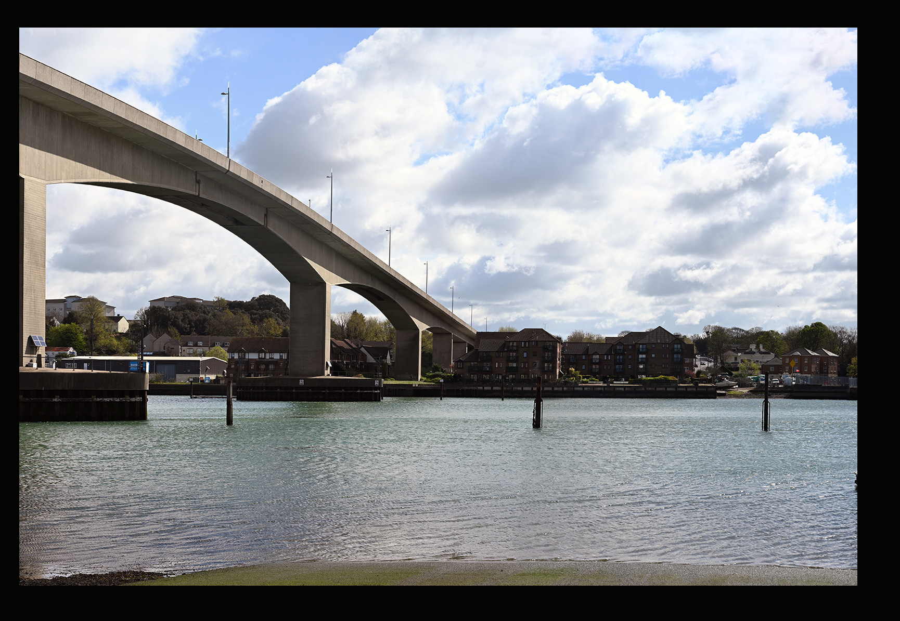
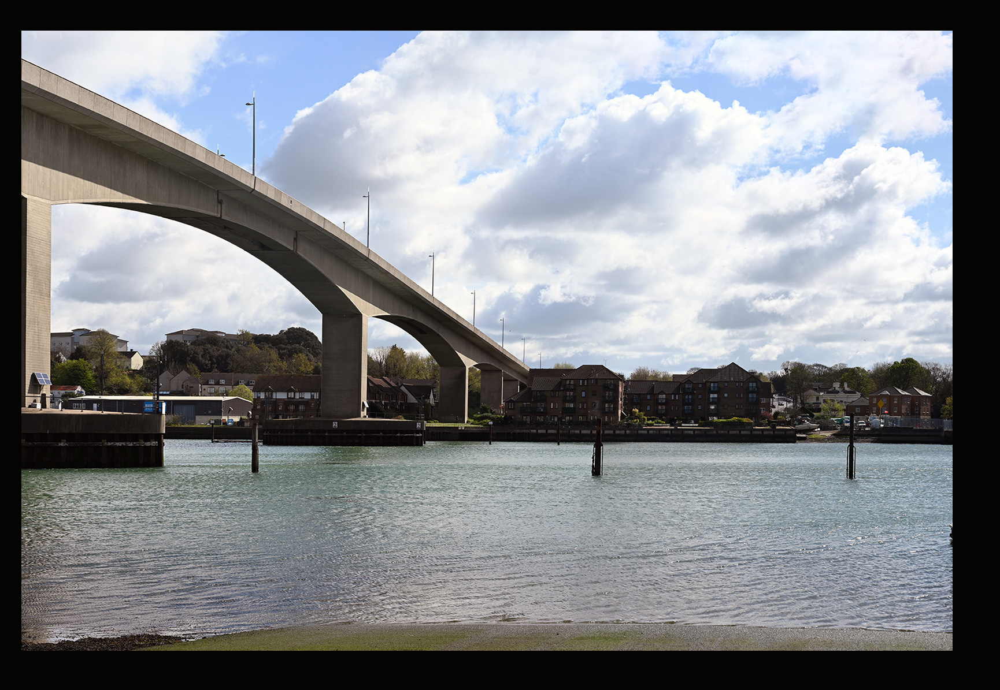
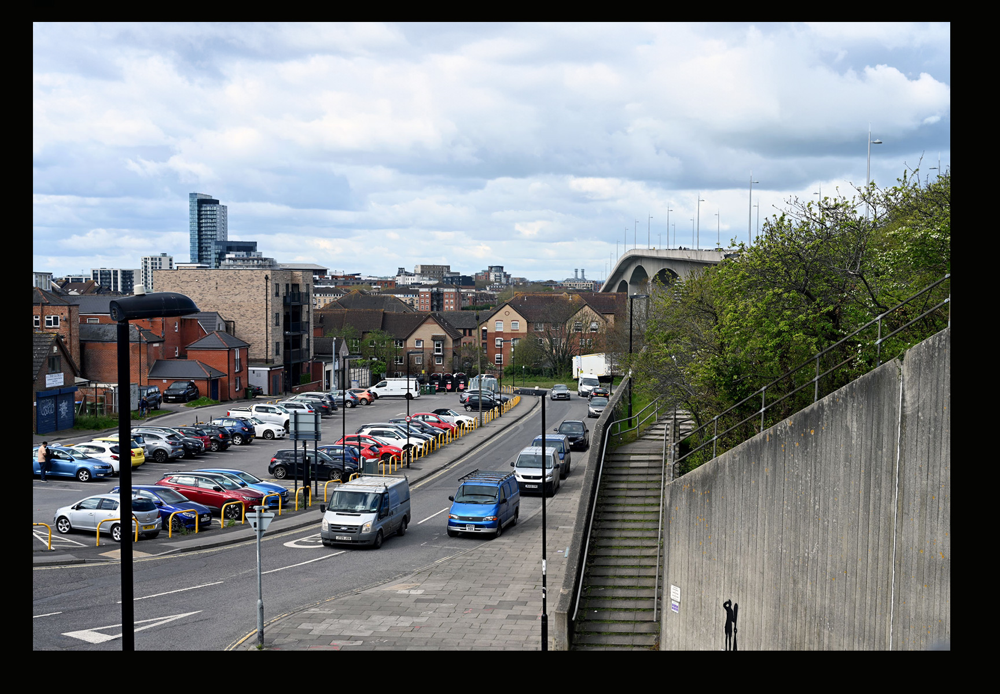
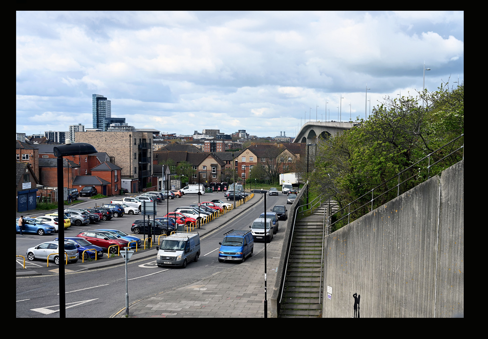

Introduction
The 22nd of March 2024 marked 50 years since work began to construct the Itchen Bridge (Robertson 1976; Nicholson and Robertson 1977). The bridge opened to traffic just over three years later on the 1st of June 1977.
Figure 1 shows drone footage of the bridge in April 2024. The Itchen Bridge Maintenance Project also sees major repairs being undertaken this year.
In Section 3 we present photographs from 11 colour 35 mm slides from an unknown local photographer from Southampton who captured the construction process from 1974 to the final day of the Woolston chain ferry on the 11th of June 1977. For five of the pictures we have compared the slides to the present day.
Background
Location
{kind=link}
Dimensions
At 1200 metres in length and rising to provide 24 metres clearance at it’s highest point (28.9 metres above chart datum (“Port of Southampton,” n.d.)) and weighing in at 61,000 tons (Adams 1977), the Itchen Bridge is by far the biggest bridge in Southampton (Figure 3). The height is a result of two ship mast height surveys carried out in 1958 and 1970. Only six ships with masts greater than 24.4 metres were observed in 1970, but this was sufficient to not apply for any reduction in height as laid out in the 1960 Southampton Corporation Act. This in turn created the 5% gradient that makes the bridge rise steeply from the land on either side (Robertson 1976).

Costs
The tender price for the bridge was £5,710,630, but in 1977 the total cost was estimated to be around £12 million (Nicholson and Robertson 1977). That’s approximately equivalent to a tender price of £74.5 million and total cost of £157 million in 2024 (“UK Inflation Calculator: GBP from 1751 to 2024,” n.d.), and is about the same as it costs to run the NHS in England for 9 hours (“NHS: Key Facts And Figures,” n.d.). In 1977 it was estimated that the costs would be repaid by tolls in around 25 years (2002) (Nicholson and Robertson 1977). In 1981 following a question in Parliament the date for repayment was revised back to 2025 (“Toll Bridges - Hansard - UK Parliament,” n.d.). A Freedom of Information request by Victoria Fraser in September 2023 confirmed that the debt had been repaid in 2016 with toll income of between £2 and £3.8 million for the financial years 2020 to 2023 (“FOI 2324 056486 r.pdf,” n.d.). The response to this request also noted an expected £4.5 million maintenance costs for the 2024 repairs.
The original purpose of the toll was in part as a congestion charge to discourage traffic as well as pay for the costs of the bridge and objections raised by motoring organisations almost led to the failure of the project (Robertson 1976; Nicholson and Robertson 1977).
Design and construction
Further history and information
The Itchen Bridge replaced the Woolston Ferry some 144 years after a bridge was first proposed in 1833 and the history prior to the building of the bridge are well documented on the Itchen Bridge Wikipedia and Woolston Floating Bridge Wikipedia pages.
Southampton Museums & Archive have a page about the floating bridge as part of their Southampton Stories collection. On YouTube you can hear the song the Woolston Ferry by Gutta Percher & Balladeers which references the Lowry painting of the ferry that is part of the collection at Southampton City Art Gallery.
Brian Adams wrote a book about the history and construction of the bridge (Figure 4) which is available in both the Southampton City and University of Southampton Libraries (Adams 1977).

For more technical details, the University of Southampton Library has two academic journal articles about the construction in its collection (Robertson 1976; Nicholson and Robertson 1977) together with lots of other local history in the Cope collection and Special Collections and Archives. As well as books and texts, these collections include postcards, maps and engravings.
The Daily Echo has published numerous articles about the Itchen Bridge in the last 50 years, including ‘10 things you may not know’ and ‘46 years on’ and this little tidbit about G E Prince & Sons from Chapel Road and the origins of the Toll Booths.
The bridge also inspired Ali Sparks to write the Radio 4 drama Tess of the Tollbooth.
Colour images, then and now
 



 
